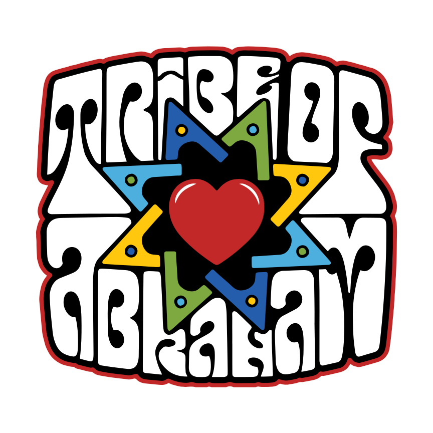

Open Source Music Education
Play together.
Right now.
Free tools that help people make music together without years of theory. Pick up a guitar. Sit down at a keyboard. Find the 1 chord and go.
Why This Exists
Music is a shared language
Most people who've taken lessons still can't play with other people. They learned songs, not the language. The Nashville Number System changes that — it's how working musicians communicate in real time, without sheet music, without rehearsal.
Tribe of Abraham builds free, open-source tools that teach that language. The goal is simple: a family sitting together, the chord chart on the screen, everyone finding their part. The same way television replaced silence in the living room — music can replace television.
We've seen it work with communities that had never encountered this kind of music at all. The tools meet people exactly where they are.
Music App
Pick a key. Pick a groove.
Play.
The full experience — Nashville Notation Wheel and Drum Sequencer on one screen. Change the time signature and the chord progression adapts. 3/4 gives you three chords. 7/8 gives you seven. Pick a key, pick a groove, and play.
Hardware
Built by hand.
Open to everyone.
The first version was a simple cherry slab — didn't even have a bottom. An M0 SAMD XIAO, a single RGB LED, and four machined aluminum buttons. No WiFi. No firmware updates. No web UI. It's been running for four years and still lives on the Moog station because it's awesome at what it does.
The new version is built on the ESP32-S3 — WiFi hotspot configuration, browser-based firmware flashing, and a fully programmable MIDI foot controller. Curly maple enclosure, handmade at Ragamuffin Workshop. Looping is just one function. The entire codebase is open source and the firmware flashes from a web page.
No apps. No drivers. No computer required to configure it. Plug it in, connect to its hotspot, and set it up from your phone.

Front: the current ESP32-S3 in curly maple. Back: the original cherry slab — four years on the Moog station and counting.
Nashville Notation Wheel
Find the 1 chord.
Everything else follows.
An interactive circle of fifths built around the Nashville Number System. Select a key, see the numbers light up with chord diagrams for guitar and color-coded piano keyboards for every position. Transpose instantly. Works on any screen, any device — designed to run on a TV in a living room.
Built to be readable across a room. Run it on a TV or a tablet and everyone at the session can see where they are.
Drum Sequencer
Rhythms you've never heard.
Most people only know the rhythms they grew up with. This sequencer is loaded with patterns from musical traditions around the world — so you can hear how a 7/8 Balkan groove feels, what makes an Afrobeat pattern lock in, or why a bossa nova swings differently than a shuffle. Pick a pattern and press play.
Kaleidoscope
Not music. Just cool.
This has absolutely nothing to do with music education. But we built it, it's mesmerizing, and we're not taking it down. Twelve mirrored slices, pure HTML5 and CSS transforms — pick a pattern, control the speed, and lose a few minutes.
Open Source
Built in the open.
Yours to use.
Every tool on this site is free and open source — MIT licensed, hosted on GitHub, available for anyone to use, fork, or contribute to. Teachers, developers, musicians, and community organizers are all welcome.
If you're building something in this space — music education, community music-making, accessible theory tools — we want to work with you.
- Use any tool freely in your classroom or community
- Fork and adapt for your own context
- Contribute code, translations, or chord data
- Commission custom tools through Ragamuffin Studios
Repositories
All source code lives on GitHub. Everything is MIT licensed unless otherwise noted.
-
View →tribeofabraham / nashville-notationNashville Number System interactive tool
-
View →tribeofabraham / drum-sequencerWorld rhythm explorer — drum patterns from global traditions
-
View →tribeofabraham / harmony-rhythmIntegrated music app — notation wheel and sequencer combined
-
View →tribeofabraham / kaleidoscopeHTML5 interactive kaleidoscope
-
View →tribeofabraham / midi-foot-pedalESP32-S3 programmable pedal firmware — web UI hotspot config
-
View →tribeofabraham / midi-foot-pedal-flasherBrowser-based WebUSB firmware flash utility
Get Involved
Join the Tribe.
Whether you want to contribute code, use the tools in your community, or commission something new — reach out.